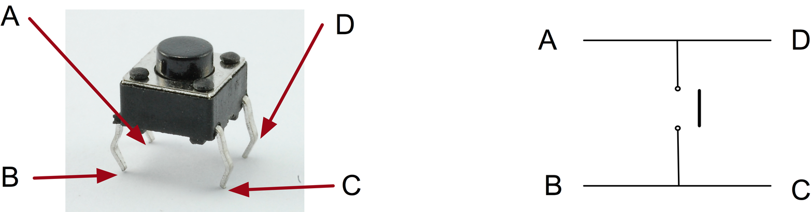
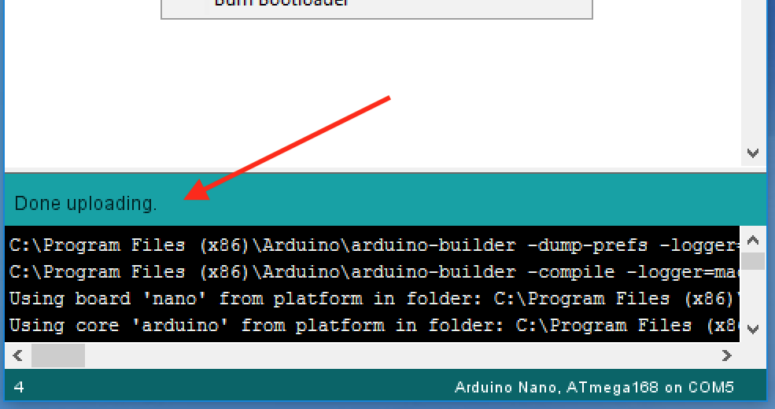

Arduino
1 PTM Control
Build It
- We are going to now learn how to include digital control to your Arduino.
- To do this, we will need to connect a PTM switch to your breadboard.
- Look at the photo below to see how to wire the board.
- You will need the following.
- 1 X PTM switch
- 1 X 10K resistor
- 2 X Red single core jump wire
- 1 X Black single core jump wire
- Before we can start wiring up the switch, we need to know how the switch is connected.
- The switch is wired in 2 rows, when the button is pushed, all 4 pins are connected.

- The PTM switch needs to be connected across the gap in the centre of the breadboard.
- It will only fit one way around as the pins are connected in a rectangle shape.
- We are going use the input A5 for the switch. This will need a 10k pull down resistor and connection to power.
- Please note there is a black jump wire at the end of the board to connect ground to the bottom of the breadboard.
- Below is the circuit diagram of how you would connect it is it was a Genie microcontroller.
Code It
- We now need to start coding the switch to control the LED.
- Open up your previous code for the LED.
- First, we need to declare the following variables.
- int buttonPin = A5; // This declare which pin the button is connected to.\
- int buttonState = 0; // Set the state of the button to low/0
- Next we need to setup the button as an input.
- pinMode(buttonPin, INPUT); //This declares the button as an input on A5
- Now we need to add the instructions for the loop.
- First we need to tell the microcontroller that the input it is going to read is a digital input.
- buttonState = digitalRead(buttonPin);
- Next we need to instruct the micrcontroller to look at the state of the input. It will then decide using an if/else statement whether to turn on the output or turn off the output.
- if (buttonState == HIGH)
- digitalWrite(ledPin, HIGH); // Turn on the LED
- else
- digitalWrite(ledPin, LOW); // Turn off LED
- Now click the upload button with the Arduino connected.

- Below is a video of how it should work.
Badge It
- To complete the badges you will need to Take a photo of your finished program and finished breadboard.
- Silver: Upload a screenshot of your switch control sketch and a photo of your finished breadboard.
- Gold: Write a code to make the switch turn the LED on permanently and then off permanently each time you press the switch.
- Platinum: Write a sketch to allow the LED to flash continuously when the switch is pressed and then stop when the switch is pressed again.